מקרה 01
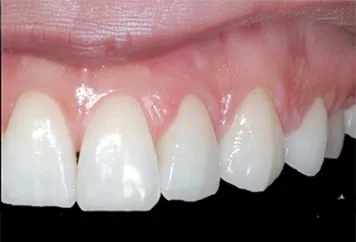
מעל 15 שנות ניסיון בשיקום הפה, שתלים ואסתטיקה דנטלית — עם תכנון מדויק, טיפול אישי ותוצאה טבעית.
כאן מוצגים כל ששת זוגות התמונות שמופיעים באתר המרפאה, כאשר שתי התמונות גלויות יחד ולא מוסתרות בתוך סליידר.

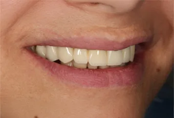
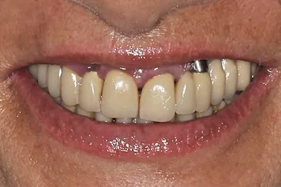
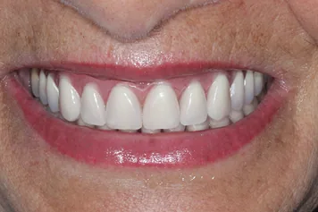
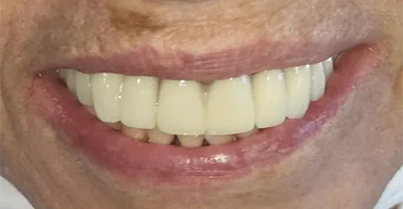
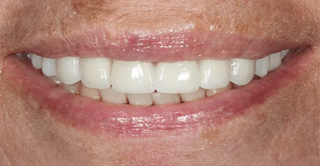
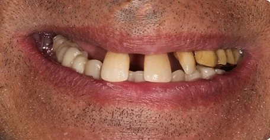
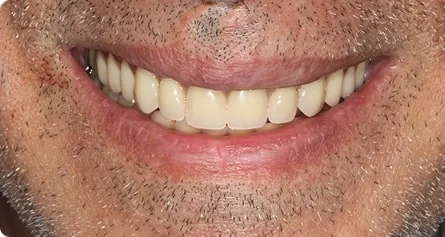
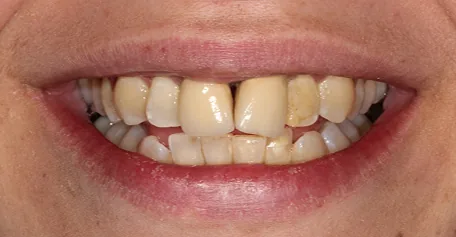
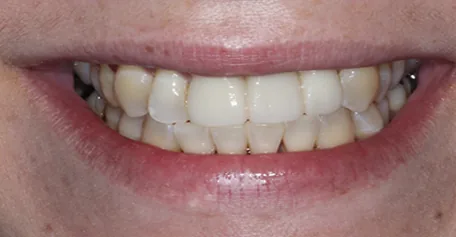
התוצאות משתנות ממטופל למטופל ומצריכות בדיקה ותכנון אישיים. יש לוודא אישור מטופלים לפני פרסום סופי.
תמונות אמיתיות מתוך אתר המרפאה: עבודה קלינית, בדיקת עבודות, סביבת המרפאה ודיוק בכל שלב.
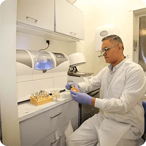
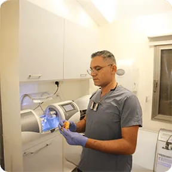
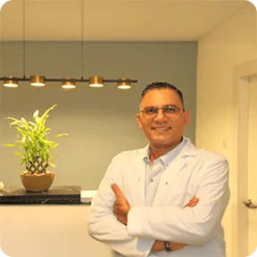
כל חמש התמונות המקצועיות הקיימות באתר מוצגות בגלריה אחת רחבה.
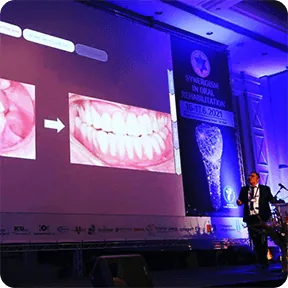
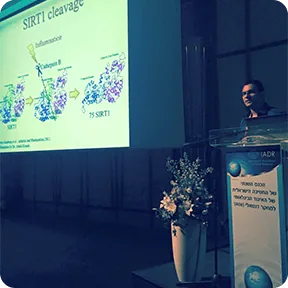
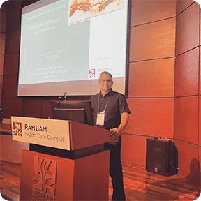
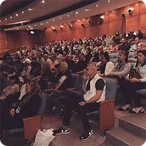
ד״ר תחסין יונס הוא בוגר האוניברסיטה העברית–הדסה עין כרם ומומחה לשיקום הפה, עם פעילות אקדמית ומחקרית בישראל ובקנדה.
לפרופיל המקצועי המלא ←תכנון כולל למקרים מורכבים, תפקוד ואסתטיקה.
תכנון שתלים ושיקום ארוך טווח.
שיפור עדין עם מראה טבעי.
סריקה ועיצוב דיגיטלי מדויק.
התאמת גוון מבוקרת ומציאותית.
טיפולי שורש, סתימות וניקוי.
הבנת הצרכים והציפיות.
סריקה ומידע מדויק לפני הטיפול.
אפשרויות ברורות ושלבים מתואמים.
דיוק ומעקב לאורך זמן.
“מהבדיקה הראשונה ידעתי שאני בידיים טובות. ד״ר יונס מסביר הכול, מציג את הפה בתלת־ממד ומראה בדיוק מה צריך לעשות.”
“עברתי הלבנה, שתלים וטיפולים נוספים והתוצאות מצוינות. מקצועי, סבלני ומעניק יחס אישי שמשרה ביטחון מלא.”
“מטופל של ד״ר יונס כבר שנים, וגם כל המשפחה. השתלים והכתרים מחזיקים מצוין לאורך זמן והשירות תמיד ברמה גבוהה.”
השאירו פרטים וצוות המרפאה יחזור אליכם לתיאום פגישת ייעוץ.